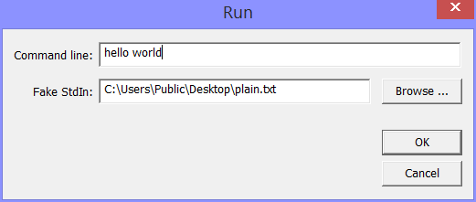
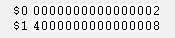
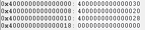
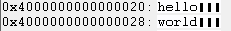

You reach the MMIX run options through the Options menu.
When an MMIX program enters the `Main´ routine, the resisters $0 and $1 will contain the argument count and the location of the argument vector, respectively.
The argument count is the number of arguments given on the command line. The argument vector is an array of octabytes located at the beginning of the pool segment; these octabytes contain the addresses of the arguments. The arguments are stored as zero terminated ASCII strings in the pool segment as well. Note that the first octabyte in the pool segment contains the address of the first free octabyte in the pool segement.
As an example, if the program starts with the above command line ``hello world´´, you can see in the local register window:

In register $0 is the value 2 (two arguments) and in register $1 is the value #4000 0000 0000 0008, pointing to the second octabyte in the pool segment.
Looking at the pool segement using the pool segment window you can see:

The first octabyte give the address of the free space in the pool segment. The argument vector starts with the second octabyte. The value #4000 0000 0000 0020 is the address of the first argument string; the value of the next octabyte #4000 0000 0000 0028 is the address of the second argument string; and the argument vector is terminated by a zero octabyte. The argument strings are best seen in ASCII format:

When an MMIX program reads from Standard Input (handle 0), it usualy reads input characters interactively from the trace window. It is, however, sometimes convenient to use a file to simulate standard input. If a filename is given in this edit box, the data from this file will be used instead of interactive input. It is equivalent to the -f option of the command line MMIX simulator).